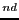

| S60 Module Reference |
| S60 Module Reference |
MBM is the native Symbian OS format used for pictures. It is a
compressed file format where the files can contain several bitmaps and
can be referred to by a number. An .mbg file is the header file
usually associated with an .mbm file, which includes symbolic
definitions for each bitmap in the file. For example, an
avkon.mbm file has an associated index file called
avkon.mbg, which is included in S60 SDKs. For more information
on the MBM format and the bitmap converter tool, see [4] and
search the topics with the key term "How to provide Icons"; this topic
also points you to the Bitmap Converter tool that can be used for
converting bitmaps into the MBM format.
S60 2 Edition FP3 introduces a new format for icons called Multi-Image File (MIF). This format is very similar to the MBM format and also contains several compressed files. The files to be compressed should be in Scalable Vector Graphics Tiny (SVG-T) format. For more information on the SVG format, see Scalable Vector Graphics (SVG) 1.1 Specification [10].
| filename, bitmap, bitmapMask) |
Example: The following builds an icon with the standard signal symbol:
icon = appuifw.Icon(u"z:\\system\\data\\avkon.mbm", 28, 29)
| S60 Module Reference |